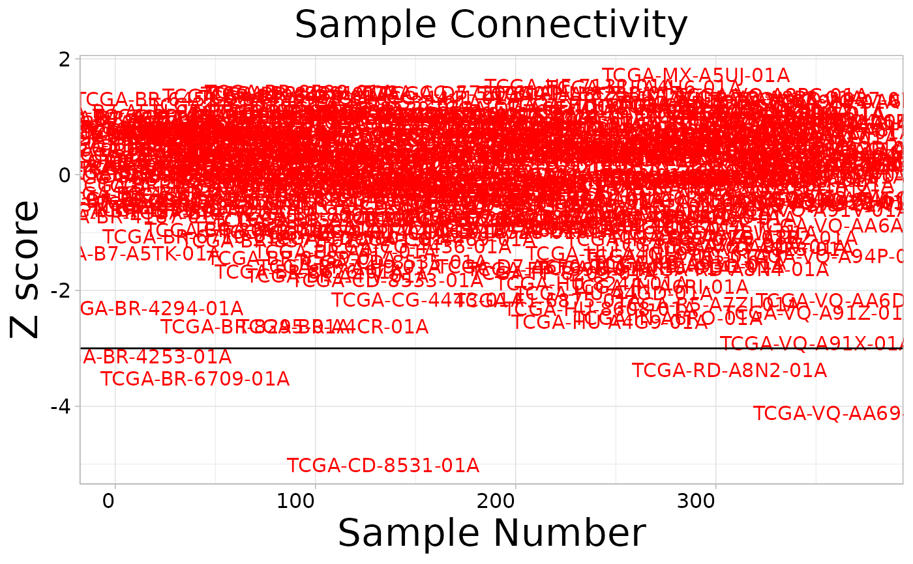

Identify Outlier Samples in Gene Expression Data
Source:R/find_outlier_samples.R
find_outlier_samples.RdAnalyzes gene expression data to identify potential outlier samples using connectivity analysis via the WGCNA package. Calculates normalized adjacency and connectivity z-scores for each sample, generates connectivity plots, and optionally performs hierarchical clustering.
Usage
find_outlier_samples(
eset,
yinter = -3,
project = NULL,
plot_hculst = FALSE,
show_plot = TRUE,
index = NULL,
save = FALSE
)Arguments
- eset
Numeric matrix. Gene expression data with genes as rows and samples as columns.
- yinter
Numeric. Z-score threshold for identifying outliers. Default is -3.
- project
Character or `NULL`. Output directory path for saving plots. Required if `save = TRUE`. Default is `NULL`.
- plot_hculst
Logical. Whether to plot hierarchical clustering. Default is `FALSE`.
- show_plot
Logical. Whether to display the connectivity plot. Default is `TRUE`.
- index
Integer or `NULL`. Index for output file naming. Default is `NULL`.
- save
Logical. Whether to save plots to files. Default is `FALSE`.
Examples
eset_tme_stad <- load_data("eset_tme_stad")
#> ℹ Loading cached data: "eset_tme_stad"
outs <- find_outlier_samples(eset = eset_tme_stad)

#> ℹ When yinter = -3
#> ℹ Potential outliers: "TCGA-BR-4253-01A", "TCGA-BR-6709-01A", "TCGA-CD-8531-01A", "TCGA-RD-A8N2-01A", and "TCGA-VQ-AA69-01A"
print(outs)
#> [1] "TCGA-BR-4253-01A" "TCGA-BR-6709-01A" "TCGA-CD-8531-01A" "TCGA-RD-A8N2-01A"
#> [5] "TCGA-VQ-AA69-01A"